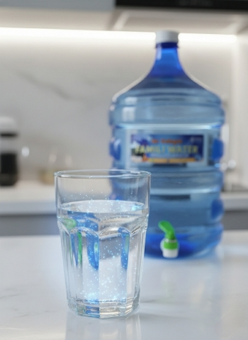
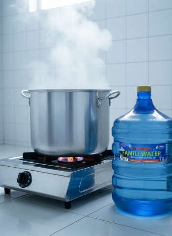
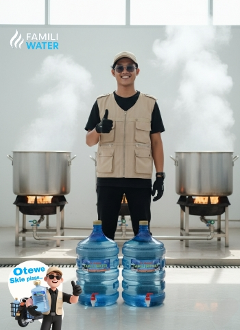
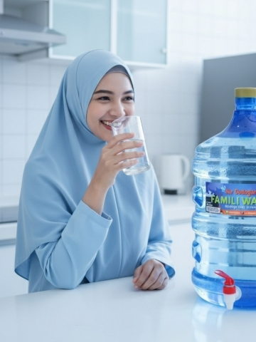

FAMILI WATER
FAMILI WATER
Mineral alami tetap terjaga
Tidak disaring sampai hambar. Rasa segar dan manis seperti air pegunungan.
FAMILI WATER menyediakan air rebusan, air matang isi ulang, dan air minum isi ulang. Dimasak sampai mendidih, bukan sekadar disaring. Rasa manis alami, aman untuk seluruh keluarga, diantar langsung sampai dapur Anda.

Empat alasan keluarga memilih air godogan dan air matang isi ulang Famili Water dibanding air minum isi ulang biasa.

Tidak disaring sampai hambar. Rasa segar dan manis seperti air pegunungan.

Lebih ringan dan tidak getir. Enak diminum langsung tanpa campuran.

Tidak hambar dan tidak berbau, cocok untuk minum sehari-hari.
Cocok untuk susu formula, MPASI, dan ibu menyusui.
Sebutkan jumlah galon dan alamat Anda.
Kurir kami langsung menuju rumah Anda.
Tidak perlu angkat galon sendiri. Tinggal minum.
Pilih jumlah anggota keluarga. Estimasi 2 liter per orang per hari.

Tidak usah buang tenaga beli air minum isi ulang. Pesan air godogan lewat WhatsApp, kurir segera menuju rumah Anda.
Air godogan (air rebusan) FAMILI WATER dimasak sampai matang, bukan hanya difiltrasi, jadi rasanya lebih manis, ringan, dan tidak getir.
Karena sudah matang, air minum isi ulang kami cocok untuk susu formula, MPASI, dan ibu menyusui.
Cukup chat WhatsApp 0857-5999-5235, sebutkan jumlah galon dan alamat, lalu kurir mengantar sampai dapur Anda.
Famili Water adalah layanan air godogan, air rebusan, dan air matang isi ulang yang diantar langsung ke rumah.
Peluang usaha ringan dengan modal kecil dan dukungan penuh tim FAMILI WATER.
Lihat peluang